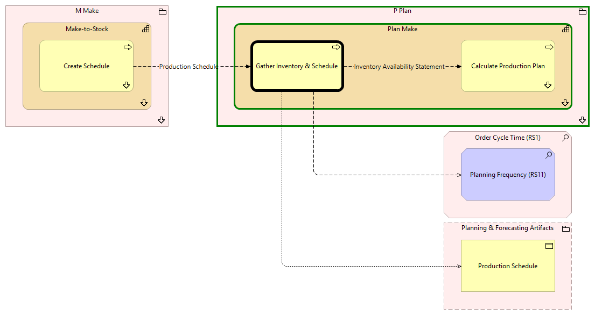

Gather Inventory & Schedule - Context
(
)

generated_by
build_archi_xml.py::gen_proc_node_context_view
generator_path
pedro/capabilities/build_archi_xml_assign/build_archi_xml_assign.py
run_at
2026-10-19T21:03:49
view_type
process_context
P Plan
Plan Make
Calculate Production Plan
Calculate Production Plan - Context
Gather Inventory & Schedule
Plan Make - Processes
P Plan - Processes
M Make
Make-to-Stock
Create Schedule
Create Schedule - Context
Make-to-Stock - Processes
M Make - Processes
Order Cycle Time (RS1)
Planning Frequency (RS11)
Planning & Forecasting Artifacts
Production Schedule
Inventory Availability Statement
Gather Inventory & Schedule
Calculate Production Plan
Gather Inventory & Schedule
Planning Frequency (RS11)
Gather Inventory & Schedule
Production Schedule
Production Schedule
Create Schedule
Gather Inventory & Schedule